File: 000570.gt.txt (if the image is defective, simply delete all Arabic text and the line will be excluded)
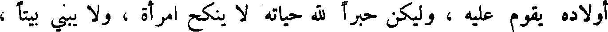
أولاده يقوم عليه ، وليكن حبرا لله حياته لا ينكح امرأة ، ولا يبني بيتا ،
File: 000571.gt.txt (if the image is defective, simply delete all Arabic text and the line will be excluded)
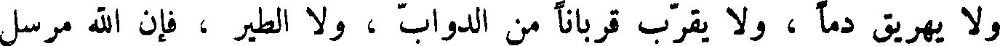
و لا يهريق دما ، و لا يقرب قربانا من الدواب ، و لا الطير ، فان الله مرسل
File: 000572.gt.txt (if the image is defective, simply delete all Arabic text and the line will be excluded)
معه ملكا من الملائكة يدله على وسط الأرض ويؤنسه .
File: 000573.gt.txt (if the image is defective, simply delete all Arabic text and the line will be excluded)
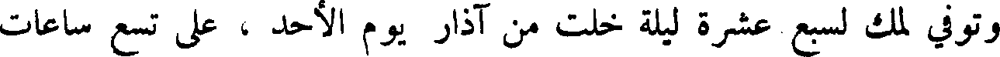
وتوفي لمك لسبع عشرة ليلة خلت من آذار يوم الأحد ، على تسع ساعات
File: 000574.gt.txt (if the image is defective, simply delete all Arabic text and the line will be excluded)
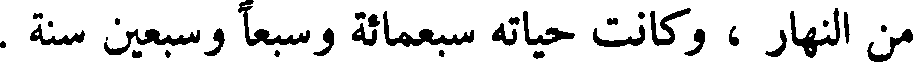
من النهار ، وكانت حياته سبعمائة وسبعا وسبعين سنة .
File: 000575.gt.txt (if the image is defective, simply delete all Arabic text and the line will be excluded)
نوح
File: 000576.gt.txt (if the image is defective, simply delete all Arabic text and the line will be excluded)
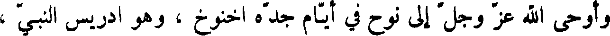
وأوحى الله عز وجل إلى نوح في أيام جده اخنوخ ، وهو إدريس النبي ،
File: 000577.gt.txt (if the image is defective, simply delete all Arabic text and the line will be excluded)
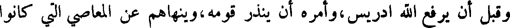
وقبل أن يرفع الله ادريس،وأمره أن ينذر قومه،وينهاهم عن المعاصي التي كانوا
File: 000578.gt.txt (if the image is defective, simply delete all Arabic text and the line will be excluded)
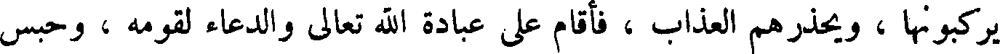
يركبونها ، ويحذرهم العذاب ، فأقام على عبادة الله تعالى والدعاء لقومه ، وحبس
File: 000579.gt.txt (if the image is defective, simply delete all Arabic text and the line will be excluded)
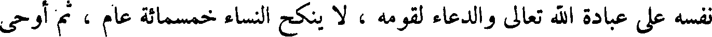
نفسه على عبادة الله تعالى والدعاء لقومه ، لا ينكح النساء خمسمائة عام ، ثم أوحى
File: 000580.gt.txt (if the image is defective, simply delete all Arabic text and the line will be excluded)
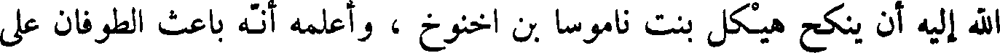
الله إليه أن ينكح هيكل بنت ناموسا بن اخنوخ ، وأعلمه انه باعث الطوفان على
File: 000581.gt.txt (if the image is defective, simply delete all Arabic text and the line will be excluded)
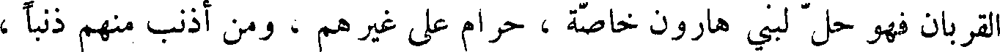
القربان فهو حل لبني هارون خاصة ، حرام على غيرهم ، ومن أذنب منهم ذنبا ،
File: 000582.gt.txt (if the image is defective, simply delete all Arabic text and the line will be excluded)
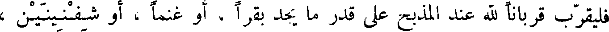
فليقرب قربانا لله عند المذبح على قدر ما يجد بقرا ، أو غنما ، أو شفنينين ،
File: 000583.gt.txt (if the image is defective, simply delete all Arabic text and the line will be excluded)
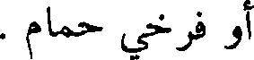
أو فرخي حمام .
File: 000584.gt.txt (if the image is defective, simply delete all Arabic text and the line will be excluded)
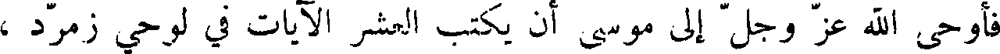
فأوحى الله عز وجل إلى موسى أن يكتب العشر الآيات في لوحي زمرد ،
File: 000585.gt.txt (if the image is defective, simply delete all Arabic text and the line will be excluded)
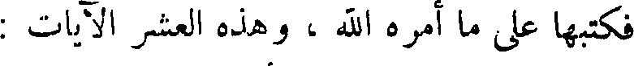
فكتبها على ما أمره الله ، وهذا العشر الآيات :
File: 000586.gt.txt (if the image is defective, simply delete all Arabic text and the line will be excluded)
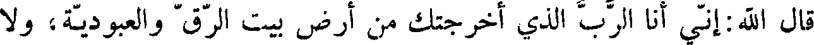
قال الله:إني أنا الرب الذي أخرجتك من ارض بيت الرق والعبودية، ولا
File: 000587.gt.txt (if the image is defective, simply delete all Arabic text and the line will be excluded)
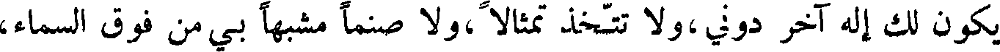
يكون لك اله آخر دوني،ولا تتخذ تمثالا ،ولا صنما مشبها بي من فوق السماء،
File: 000588.gt.txt (if the image is defective, simply delete all Arabic text and the line will be excluded)
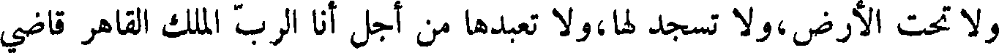
ولا تحت الأرض ،ولا تسجد لها ،ولا تعبدها من اجل أنا الرب الملك القاهر قاضي
File: 000589.gt.txt (if the image is defective, simply delete all Arabic text and the line will be excluded)
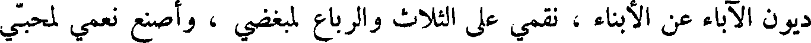
ديون الآباء عن الأبناء ، نقمي على الثلاث والرباع لمبغضي ، واصنع نعمي لمحبي
File: 000590.gt.txt (if the image is defective, simply delete all Arabic text and the line will be excluded)
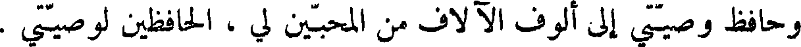
وحافظ وصيتي إلى ألوف الآلاف من المحبين لي ، الحافظين لوصيتي .
File: 000591.gt.txt (if the image is defective, simply delete all Arabic text and the line will be excluded)
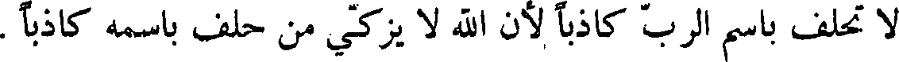
لا تحلف باسم الرب كاذبا لان الله لا يزكي من حلف باسمه كاذبا .
File: 000592.gt.txt (if the image is defective, simply delete all Arabic text and the line will be excluded)
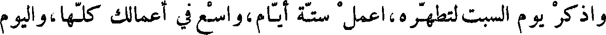
واذكر يوم السبت لتطهره،أعمل ستة أيام،واسع في أعمالك كلها،واليوم
File: 000593.gt.txt (if the image is defective, simply delete all Arabic text and the line will be excluded)
السابع سبت الرب إلهك لا تعمل فيه شيئا من الأعمال أنت وابنك وابنتك وعبدك
File: 000594.gt.txt (if the image is defective, simply delete all Arabic text and the line will be excluded)
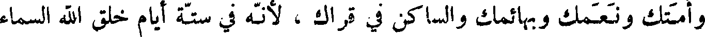
أمتك ونعمك وبهائمك والساكن في قراك ، لأنه في ستة أيام خلق الله السماء
File: 000595.gt.txt (if the image is defective, simply delete all Arabic text and the line will be excluded)
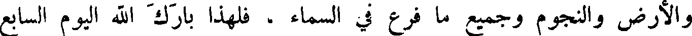
والأرض والنجوم وجميع ما فرع في السماء ، فلهذا بارك الله اليوم السابع
File: 000596.gt.txt (if the image is defective, simply delete all Arabic text and the line will be excluded)
وطهره .
File: 000597.gt.txt (if the image is defective, simply delete all Arabic text and the line will be excluded)
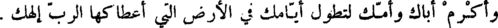
واكرم أباك وأمك لتطول أيامك في الأرض التي اعطاكها الرب ألهك .
File: 000598.gt.txt (if the image is defective, simply delete all Arabic text and the line will be excluded)
ولا تقتل .
File: 000599.gt.txt (if the image is defective, simply delete all Arabic text and the line will be excluded)
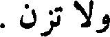
ولا تزن .
To Save: `Ctrl+s`, make sure to choose `Webpage, complete`!